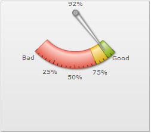

FusionWidgets angular gauge allows you to draw the gauge from virtually any start angle to any end angle and in both directions. In all our previous examples we had created a gauge that spanned 180 degrees. Here, we’ll see how to create gauges with various combinations of angles and gauge origin.
The following attributes of <chart> element are the main control parameters which help us create charts of various angles and starting points:
| Attribute Name | Type / Range | Description |
| gaugeStartAngle | Number (-360-360) | Angle from where the gauge will start drawing. The default value is 180. |
| gaugeEndAngle | Number (-360-360) | Angle where the gauge will end drawing. The default value is 0. |
| gaugeOriginX | Number (Pixels) | You can manually specify the x co-ordinate at which the center of the gauge will be placed. This comes handy when you are designing small angle gauges or when you are using custom objects in the chart to draw certain objects and need to set the exact center position. |
| gaugeOriginY | Number (Pixels) | You can manually specify the y co-ordinate at which the center of the gauge will be placed. This comes handy when you are designing small angle gauges or when you are using custom objects in the chart to draw certain objects and need to set the exact center position. |
| gaugeOuterRadius | Number (Pixels) | Outer radius for the color range scale. |
| gaugeInnerRadius | Number (Pixels) or Number (percent) | Inner radius for color range scale. It can either be in exact pixels or in percentage of outer radius. |
We'll now see how to use a combination of gaugeStartAngle and gaugeEndAngle attributes to create gauges of various shapes.
We'll start with our basic previous example, where we had specified:
It resulted in:

As you can see here, the gauge has started from an angle of 180 degrees (refer to the angle image above) and ended at 0 degree.
Similarly, if we wanted the gauge to start from 0 and end and 180, we could set:
This will result in an opposite direction of gauge, as shown below:
When specifying the start and end angles for gauges, you should always make sure that the difference between start and end angle should not be more than 360 degrees, else the gauge will not behave as intended.
Shown below are some more examples of gauges with different angle combinations:
 |
|
gaugeStartAngle='225' gaugeEndAngle='-45' |
gaugeStartAngle='-45' gaugeEndAngle='225' |
gaugeStartAngle='90' gaugeEndAngle='0' |
gaugeStartAngle='0' gaugeEndAngle='90' |
gaugeStartAngle='135' gaugeEndAngle='45' |
gaugeStartAngle='45' gaugeEndAngle='135' |
 |
|
gaugeStartAngle='90' gaugeEndAngle='-90' |
gaugeStartAngle='-90' gaugeEndAngle='90' |
Based on the gaugeStartAngle and gaugeEndAngle, an angular gauge automatically positions its x and y center points (origins).
Shown below are some examples of gauges with various origins based on different angle combinations:
| gaugeStartAngle="180" gaugeEndAngle="0" | gaugeStartAngle="135" gaugeEndAngle="45" |
| gaugeStartAngle="90" gaugeEndAngle="0" | gaugeStartAngle="65" gaugeEndAngle="25" |
 |
|
| gaugeStartAngle="180" gaugeEndAngle="90" | gaugeStartAngle="165" gaugeEndAngle="105" |
| gaugeStartAngle="180" gaugeEndAngle="-180" | gaugeStartAngle="210" gaugeEndAngle="-30" |
|  | |
| gaugeStartAngle="180" gaugeEndAngle="360" | gaugeStartAngle="224" gaugeEndAngle="315" |
| gaugeStartAngle="270" gaugeEndAngle="360" | gaugeStartAngle="295" gaugeEndAngle="335" |
 |
|
| gaugeStartAngle="180" gaugeEndAngle="270" | gaugeStartAngle="200" gaugeEndAngle="240" |
| gaugeStartAngle="90" gaugeEndAngle="-90" | gaugeStartAngle="45" gaugeEndAngle="-45" |
 |
|
| gaugeStartAngle="90" gaugeEndAngle="270" | gaugeStartAngle="135" gaugeEndAngle="225" |
Try the angles using a live demo from here.
Important note: Along with positioning the origins, a JavaScript Angular gauge also scales itself to best-fit into the available space.
Often you might need to re-position the x and y center points of the chart. For example, let's build a gauge (400x300px) with following angles:
It will result in:
As you can see, here we need to:
- Change gauge origin X and origin Y to bring it at the center of the chart
- Increase gauge radius so as to fill the entire canvas
This was done using:
This will now result in:
If you even dynamically resize this gauge now with proper configuration, as explained in next section, FusionWidgets will automatically resize the origin positions and radius specified.